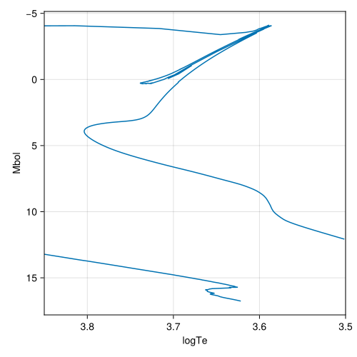
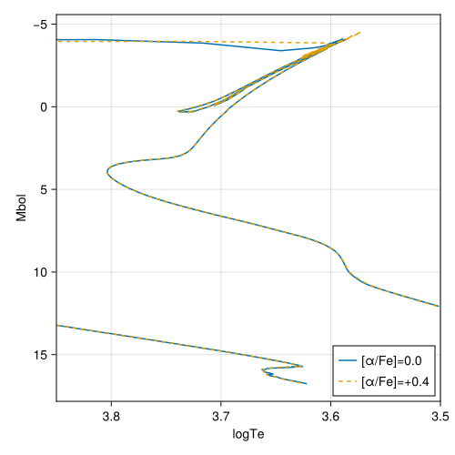
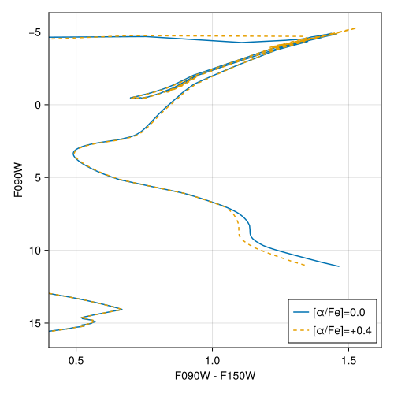

MIST v2.5
Here we describe the interface we provide to the MIST v2.5 library of stellar evolutionary tracks. See the MIST overview page for a comparison with MIST v1.2.
The MIST v2.5 tracks are described in Dotter et al. [13] (α-enhanced models) and Bauer et al. [14] (white dwarf cooling sequences). The key advances relative to MIST v1.2 are:
- [α/Fe] as a free parameter: five [α/Fe] values spanning −0.2 to +0.6 are provided, making MIST v2.5 particularly well-suited for studying metal-poor stellar populations where α-enhancement is common.
- Revised solar abundances: the v2.5 models adopt solar abundances from Grevesse and Sauval [16] rather than Asplund et al. [15] used in v1.2. The
MISTv2Chemistrytype (provided by BolometricCorrections.jl) encodes this mixture. - Denser metallicity grid: 17 [Fe/H] values (vs. 15 in v1.2), adding −2.75 and −2.25 dex.
- Altered initial mass grid: 156 mass points (vs. 196 in v1.2) but with denser sampling in the range 0.7–1.2 M☉.
Data Acquisition
The MIST v2.5 tracks are organized by rotation parameter (vvcrit) and α-element enhancement (afe). Each (vvcrit, afe) combination is a separate DataDep. The main access point is MISTv2Library, which takes both parameters as arguments:
lib = MISTv2Library(0.0, 0.0) # non-rotating, solar-scaled [α/Fe]=0
lib = MISTv2Library(0.4, 0.4) # rotating, α-enhanced [α/Fe]=+0.4The available values are:
vvcrit:StellarTracks.MIST.vvcrit_grid_v2= {0.0, 0.4}afe:StellarTracks.MIST.afe_grid_v2= {−0.2, 0.0, 0.2, 0.4, 0.6}
The first time you call MISTv2Library for a given (vvcrit, afe) combination, you will be prompted to download the required data files. Each combination requires downloading 16–17 .txz archives (one per [Fe/H] value; the [α/Fe] = +0.6 grid has 16 values because [Fe/H] = +0.5 is not available). The total data volume per combination is approximately 1.3–1.5 GB before processing and ~160 MB after. Information on customizing the install location is available here.
Each downloaded DataDep is named MISTv2.5_vvcrit<V>_afe_<A>, e.g. MISTv2.5_vvcrit0.0_afe_p0 for vvcrit=0.0, afe=0.0. To remove a specific combination, run e.g. using DataDeps; rm(datadep"MISTv2.5_vvcrit0.0_afe_p0"; recursive=true).
Table Details
As with v1.2, only the subset of columns given by StellarTracks.MIST.select_columns is saved after processing. The MIST v2.5 tracks use the same column format as v1.2.
using StellarTracks.MIST
MIST.select_columns(:star_age, :log_L, :log_Teff, :log_g, :log_surf_cell_z)Note that the MIST v2.5 grid has some individual mass tracks missing for certain (feh, vvcrit, afe) combinations. MISTv2TrackSet silently skips missing files rather than erroring, so the set of available masses may differ across the parameter grid.
Examples
Load the MIST v2.5 library of non-rotating, solar-scaled models. The vvcrit and afe parameters must be exact values from the grid.
using StellarTracks.MIST
lib = MISTv2Library(0.0, 0.0)MISTv2Library with vvcrit=0.0, afe=0.0. Valid [M/H] range: (-4.0, 0.5).Interpolate an isochrone at log10(age [yr]) = 10.05 and $[\text{M}/\text{H}] = -1.234$. The isochrone is returned as a NamedTuple.
iso = isochrone(lib, 10.05, -1.234)(eep = [244, 245, 246, 247, 248, 249, 250, 251, 252, 253 … 1696, 1697, 1698, 1699, 1700, 1701, 1702, 1703, 1704, 1705], m_ini = [0.1002292935413561, 0.10058856708968392, 0.1013223992965421, 0.10242048480717406, 0.10387247135756134, 0.10566795109272412, 0.10779645024829558, 0.11024741738419522, 0.11301021053101462, 0.11607444309267027 … 4.707476434811085, 4.736688954723211, 4.787806202121945, 4.9843534064026445, 5.070162203520624, 5.111486504448091, 5.14191802469514, 5.179055554241181, 5.235928339264879, 5.313929353028611], logTe = [3.5014181348211455, 3.5021579562739134, 3.5036274477243166, 3.505799090843737, 3.5086405454837064, 3.5121132773433197, 3.5161707643310423, 3.52075638970236, 3.5258011441444177, 3.531221871705987 … 3.65567920884187, 3.6516126418020876, 3.648022059571033, 3.6459362238087105, 3.6426941959356967, 3.638638085294163, 3.6341426153466445, 3.629852806125219, 3.6258028157042355, 3.6217394547874995], Mbol = [12.076450970121098, 12.062423085377086, 12.034435454691652, 11.993047951084739, 11.93891247514432, 11.872778450519858, 11.795501556026188, 11.708054672834733, 11.611539981084453, 11.507189122914625 … 16.267757000634756, 16.318650055412927, 16.370698647935843, 16.42604631667067, 16.480518819386614, 16.534952158461074, 16.590601430428546, 16.645920983401346, 16.701660777337967, 16.760988613683907], logg = [5.332533875252552, 5.331309416299944, 5.328907930235329, 5.325377218232284, 5.320770889690092, 5.315147885798554, 5.308572072092438, 5.301111854867413, 5.29283981378112, 5.283831274890101 … 8.612390148277917, 8.617912994050451, 8.626820251472177, 8.645958333424257, 8.658020359381487, 8.6656317897035, 8.671389553139683, 8.677999672981759, 8.686200930849866, 8.695911573819721], logL = [-2.9345803880484387, -2.928969234150834, -2.917774181876661, -2.901219180433896, -2.8795649900577285, -2.8531113802079426, -2.8222006224104756, -2.787221869133893, -2.748615992433781, -2.706875649165849 … -4.611102800253903, -4.631460022165172, -4.652279459174338, -4.674418526668268, -4.696207527754646, -4.717980863384429, -4.740240572171418, -4.762368393360538, -4.784664310935188, -4.808395445473564], log_surf_cell_z = [-2.999308089904139, -2.999308089894867, -2.999308089876962, -2.9993080898419753, -2.9993080897763393, -2.9993080896589075, -2.999308089462856, -2.999308089157074, -2.99930808869894, -2.9993080880401606 … -14.264776235982586, -14.50633677087571, -14.44812953844897, -14.390125117287747, -14.42656339204474, -14.4018216194667, -14.382894206795108, -14.475672066012041, -14.467088094394475, -14.432920037739787])The result can be converted to a table:
using TypedTables: Table
Table(iso)Table with 7 columns and 1462 rows:
eep m_ini logTe Mbol logg logL log_surf_cell_z
┌────────────────────────────────────────────────────────────────────
1 │ 244 0.100229 3.50142 12.0765 5.33253 -2.93458 -2.99931
2 │ 245 0.100589 3.50216 12.0624 5.33131 -2.92897 -2.99931
3 │ 246 0.101322 3.50363 12.0344 5.32891 -2.91777 -2.99931
4 │ 247 0.10242 3.5058 11.993 5.32538 -2.90122 -2.99931
5 │ 248 0.103872 3.50864 11.9389 5.32077 -2.87956 -2.99931
6 │ 249 0.105668 3.51211 11.8728 5.31515 -2.85311 -2.99931
7 │ 250 0.107796 3.51617 11.7955 5.30857 -2.8222 -2.99931
8 │ 251 0.110247 3.52076 11.7081 5.30111 -2.78722 -2.99931
9 │ 252 0.11301 3.5258 11.6115 5.29284 -2.74862 -2.99931
10 │ 253 0.116074 3.53122 11.5072 5.28383 -2.70688 -2.99931
11 │ 254 0.11943 3.53692 11.3964 5.27416 -2.66254 -2.99931
12 │ 255 0.123066 3.54277 11.2807 5.26392 -2.61626 -2.99931
13 │ 256 0.126965 3.54863 11.162 5.25321 -2.56879 -2.99931
14 │ 257 0.131128 3.55434 11.0419 5.24208 -2.52076 -2.99931
15 │ 258 0.13554 3.55972 10.9226 5.23063 -2.47305 -2.99931
16 │ 259 0.140214 3.56459 10.8058 5.21892 -2.4263 -2.99931
17 │ 260 0.145144 3.56874 10.6937 5.20703 -2.38148 -2.99931
⋮ │ ⋮ ⋮ ⋮ ⋮ ⋮ ⋮ ⋮Plot the HR diagram:

Load a bolometric correction grid from BolometricCorrections.jl to place the isochrone into an observational photometric system. Because the MIST v2.5 stellar track and BC grids share the same MISTv2Chemistry chemical mixture, metallicities are handled consistently without the need for any conversion.
using BolometricCorrections.MIST: MISTv2BCGrid
bc = MISTv2BCGrid("JWST")
iso_phot = isochrone(lib, bc, 10.05, -1.234, 0.02) # logAge, [M/H], AvTable with 36 columns and 1462 rows:
eep m_ini logTe Mbol logg logL log_surf_cell_z ⋯
┌───────────────────────────────────────────────────────────────────────
1 │ 244 0.100229 3.50142 12.0765 5.33253 -2.93458 -2.99931 ⋯
2 │ 245 0.100589 3.50216 12.0624 5.33131 -2.92897 -2.99931 ⋯
3 │ 246 0.101322 3.50363 12.0344 5.32891 -2.91777 -2.99931 ⋯
4 │ 247 0.10242 3.5058 11.993 5.32538 -2.90122 -2.99931 ⋯
5 │ 248 0.103872 3.50864 11.9389 5.32077 -2.87956 -2.99931 ⋯
6 │ 249 0.105668 3.51211 11.8728 5.31515 -2.85311 -2.99931 ⋯
7 │ 250 0.107796 3.51617 11.7955 5.30857 -2.8222 -2.99931 ⋯
8 │ 251 0.110247 3.52076 11.7081 5.30111 -2.78722 -2.99931 ⋯
9 │ 252 0.11301 3.5258 11.6115 5.29284 -2.74862 -2.99931 ⋯
10 │ 253 0.116074 3.53122 11.5072 5.28383 -2.70688 -2.99931 ⋯
11 │ 254 0.11943 3.53692 11.3964 5.27416 -2.66254 -2.99931 ⋯
12 │ 255 0.123066 3.54277 11.2807 5.26392 -2.61626 -2.99931 ⋯
13 │ 256 0.126965 3.54863 11.162 5.25321 -2.56879 -2.99931 ⋯
14 │ 257 0.131128 3.55434 11.0419 5.24208 -2.52076 -2.99931 ⋯
15 │ 258 0.13554 3.55972 10.9226 5.23063 -2.47305 -2.99931 ⋯
16 │ 259 0.140214 3.56459 10.8058 5.21892 -2.4263 -2.99931 ⋯
17 │ 260 0.145144 3.56874 10.6937 5.20703 -2.38148 -2.99931 ⋯
⋮ │ ⋮ ⋮ ⋮ ⋮ ⋮ ⋮ ⋮ ⋱using TypedTables: columnnames
columnnames(iso_phot)(:eep, :m_ini, :logTe, :Mbol, :logg, :logL, :log_surf_cell_z, :NIRCAM_F070W, :NIRCAM_F090W, :NIRCAM_F115W, :NIRCAM_F140W, :NIRCAM_F150W, :NIRCAM_F150W2, :NIRCAM_F162M, :NIRCAM_F164N, :NIRCAM_F182M, :NIRCAM_F187N, :NIRCAM_F200W, :NIRCAM_F210M, :NIRCAM_F212N, :NIRCAM_F250M, :NIRCAM_F277W, :NIRCAM_F300M, :NIRCAM_F322W2, :NIRCAM_F323N, :NIRCAM_F335M, :NIRCAM_F356W, :NIRCAM_F360M, :NIRCAM_F405N, :NIRCAM_F410M, :NIRCAM_F430M, :NIRCAM_F444W, :NIRCAM_F460M, :NIRCAM_F466N, :NIRCAM_F470W, :NIRCAM_F480W)To take advantage of the [α/Fe] degree of freedom, load a library with a non-zero afe value. Here we compare solar-scaled and α-enhanced isochrones at the same age and [M/H]. Note that both isochrone calls receive the same value of [M/H], not [Fe/H]; at the same [M/H] the α-enhanced population has a lower [Fe/H] but the same total metal mass fraction Z.
lib_afe = MISTv2Library(0.0, 0.4)
iso_afe = isochrone(lib_afe, 10.05, -1.234)
Here we compare JWST/NIRCam CMDs for α-enhanced and scaled-solar MIST v2.5 models with matched properties of log10(age [yr]) = 10.05, $[\text{M}/\text{H}] = -1.234$, and $A_v=0.02$ mag.

Chemistry API
We re-export the BolometricCorrections.MIST.MISTv2Chemistry type defined in BolometricCorrections.jl that encodes the solar chemical mixture assumed for the MIST v2.5 models (Grevesse and Sauval [16]). Because [α/Fe] is a free parameter in v2.5, the data grid is indexed by [Fe/H] rather than [M/H]. However, the isochrone interface always accepts [M/H] (the total logarithmic metal abundance), and MISTv2Chemistry handles the conversion between [M/H] and [Fe/H] via the Salaris et al. [17] relation. When a MISTv2Library is used with a MISTv2BCGrid, the afe value is inferred from the track library automatically so the correct bolometric corrections are selected.
Library API
StellarTracks.MIST.MISTv2Library — Type
MISTv2Library(vvcrit=0.0, afe=0.0)MISTv2Library implements the AbstractTrackLibrary interface for the MIST v2.5 stellar evolution library.
The library interpolates in [M/H] (metallicity). The vvcrit and afe parameters must be exact values from the MIST v2.5 grid (vvcrit_grid_v2 and afe_grid_v2); they select which DataDep is loaded but are not interpolated over.
Calling the library as lib(mh, mass) returns a MISTv2Track or InterpolatedTrack interpolated to mh and mass.
This type also supports isochrone construction (see isochrone).
Examples
julia> p = MISTv2Library(0.0, 0.0)
MISTv2Library with vvcrit=0.0, afe=0.0. Valid [M/H] range: (-4.0, 0.5).
julia> isochrone(p, 10.05, -2) isa NamedTuple
true
julia> p(-2.05, 1.05)
InterpolatedTrack with M_ini=1.05, MH=-2.05, Z=0.000174801, Y=0.249231, X=0.750594.StellarTracks.isochrone — Method
isochrone(p::MISTv2Library, logAge::Number, mh::Number)Interpolates properties of the stellar tracks in the library at the requested logarithmic age (logAge = log10(age [yr])) and logarithmic metallicity [M/H] = mh. Returns a NamedTuple containing the properties listed below:
eep: Equivalent evolutionary pointsm_ini: Initial stellar masses, in units of solar masses.logTe: Base-10 logarithm of the effective temperature [K] of the stellar model.Mbol: Bolometric luminosity of the stellar model.logg: Surface gravity of the stellar model.log_surf_cell_z: Base-10 logarithm of the surface metal mass fraction (Z).
Track Set API
StellarTracks.MIST.MISTv2TrackSet — Type
MISTv2TrackSet(feh, vvcrit=0, afe=0)MISTv2TrackSet implements the AbstractTrackSet interface for the MIST v2.5 stellar evolution library.
julia> ts = StellarTracks.MIST.MISTv2TrackSet(0.0, 0.0, 0.0)
MISTv2TrackSet with MH=0.0, afe=0.0, vvcrit=0.0, Z=0.0185, Y=0.2735, 1721 EEPs and 155 initial stellar mass points.Individual Tracks API
StellarTracks.MIST.MISTv2Track — Type
MISTv2Track(feh, mass, vvcrit=0, afe=0)MISTv2Track implements the AbstractTrack interface for the MIST v2.5 stellar evolution library.
julia> track = StellarTracks.MIST.MISTv2Track(-2, 0.15, 0.0, 0.0)
MISTv2Track with M_ini=0.15, MH=-2.0, afe=0.0, vvcrit=0.0, Z=0.000196117, Y=0.24926, X=0.750544.MIST v2.5 References
This page cites the following references:
- [13]
- A. Dotter, E. B. Bauer, M. Park, C. Conroy, A. P. Milone, M. Joyce and M. Cantiello. MESA Isochrones and Stellar Tracks (MIST). II. Models with alpha-enhanced Chemical Composition. ApJS 283, 64 (2026), arXiv:2602.22012 [astro-ph.SR].
- [14]
- E. B. Bauer, A. Dotter, C. Conroy, T. Cunningham, M. Park and P.-E. Tremblay. MESA Isochrones and Stellar Tracks (MIST). III. The White Dwarf Cooling Sequence. ApJS 283, 41 (2026), arXiv:2509.21717 [astro-ph.SR].
- [15]
- M. Asplund, N. Grevesse, A. J. Sauval and P. Scott. The Chemical Composition of the Sun. Annual Review of Astronomy and Astrophysics 47, 481–522 (2009).
- [16]
- N. Grevesse and A. Sauval. Standard Solar Composition. Space Science Reviews 85, 161–174 (1998).
- [17]
- M. Salaris, A. Chieffi and O. Straniero. The alpha-enhanced Isochrones and Their Impact on the FITS to the Galactic Globular Cluster System. ApJ 414, 580 (1993).